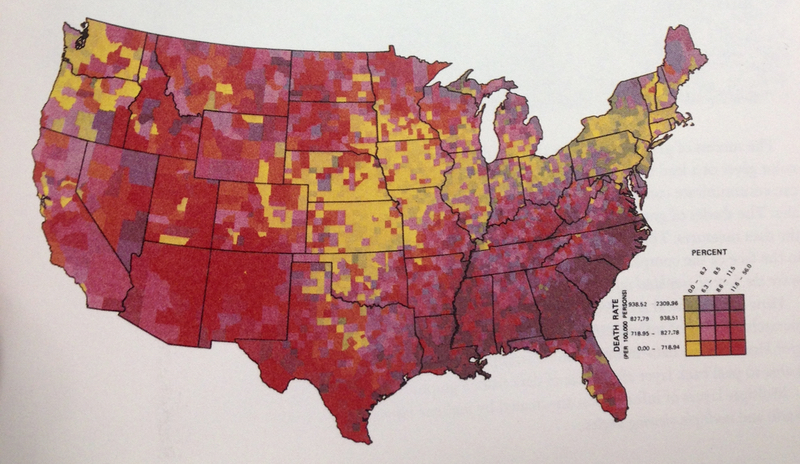
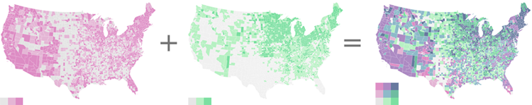

I put this page together in response to what I saw as a gap in Josh Stevens’ excellent, easy to follow tutorial: Bivariate Choropleth Maps: A How-to Guide. What are the draw backs of such an approach from an information design perspective and what other methods are be available for showing similar information?
(A choropleth is a thematic map in which areas are shaded or patterned in proportion to the measurement of the statistical variable being displayed on the map, such as population density or per-capita income.)
Stevens points out near the start of his tutorial that:
Most cartographers advise against maps with 9 or more classes. Thus it is recommended to keep things super simple when creating bivariate choropleth maps by not exceeding 3 classes in each variable.
But the problems with bivariate maps are not only down to the number of classes they require.

As usual Edward Tufte has already given this matter some thought, here’s a bit from from
The Visual Display of Quantitative Information:
The Complexity of multifunctioning elements can sometimes turn data graphics into visual puzzles, crypto-graphical mysteries for the viewer to decode. A sure sign of a puzzle is that the graphic must be interpreted through a verbal rather than a visual process.
For example, despite its clever multifunctioning data measure, formed by crossing two four-color grids, this is a puzzle graphic. Deployed here, in a feat of technological virtuosity, are 16 shades of color spread on 3,056 counties, a monument to a sophisticated computer graphics system1. But it is surely a graphic experienced verbally, not visually. Over and over, the viewers must run little phrases through their minds, trying to make sense out of the visual montage:
“Now let’s see, purple represents counties where there are both high levels of male cardiovascular disease mortality and 11.6 to 56.0 percent of households have more than 1.01 persons per room. …What does that mean anyway?..And the yellow-green counties…”
By contrast, in a non-puzzle graphic, the translation of visual image flows right through the verbal decoder initially necessary to understand the graphic. As Paul Valéry wrote, “seeing is forgetting the name of the thing one sees”
So because of this need to mentally express the relationship between the variables and their values bivariate choropleths can be slow and confusing to read — not only that but their intent is muddied “What does that mean anyway?”; this problem persists even in the simplest 2x2 form with only four classes.
So what should we use instead? As usual the answer depends on what you want to show and if you want to show several different things you may need several different graphics. Providing a clear purpose for a graphic can help with finding the right method of presentation. If you’re interested in exploring geographical distribution how about two separate coropleth maps, one for each variable? In Stevens’ original post he presents this image:

I think the two maps on the left are much easier to read than the combined figure on the right, both in terms of the distribution of individual variables and in terms of seeing relationships between the variables; this is dificult in both cases but near impossible with the combined map. For example, on the second map there’s a very obvious gap at the bottom — around Texas, New Mexico etc. This is major feature of the data’s spatial distribution but it would be really hard to spot if you only had the bivariate map 1. As it stands, the final image is less than the sum of its parts. On the other hand, if your aim is to explore the relationship between two variables how about a good old scatter plot? Encoding values in space rather than in colour will make it significantly easier to see any correlation. Space is a much better visual dimension for comparing values than colour which is best used to encode selective variables rather than a quantitative ones (this is an issue that choropleths suffer from in general).
In short, there are probably good uses for this type of map but they’re rare. Working out what questions you hope your graphic to address at the start of the design process will help you towards the right presentation method 2.
{kind=link}